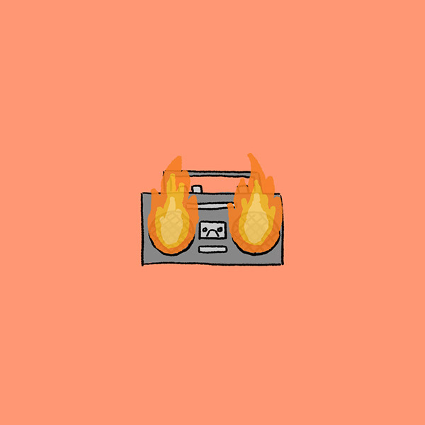

Jamly
About App
Jamly
Jamly for Web
v1.0.0
Copyright © 2024 Jamly Co.
From Berkay Türkeş
Welcome to
Jamly
Library

My Playlist
My Playlist
#
Header
replay
Created with Sketch Beta.
replay
Created with Sketch Beta.